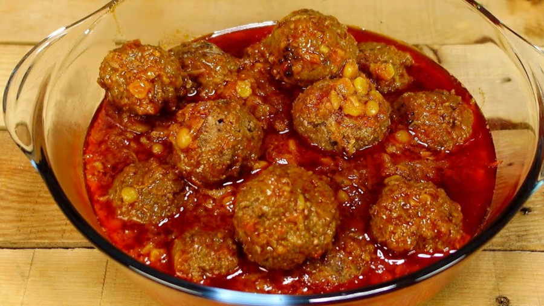

Home |
Add Recipe |
Recipe List
Kofta Recipe

Ingredients:
- 500g minced beef or lamb
- 1 onion, chopped
- 1/2 cup parsley, chopped
- 1 egg
- 1 tsp cumin, coriander, turmeric
- Salt and pepper to taste
- 2 tbsp vegetable oil (for frying)
For the Sauce:
- 2 tbsp oil
- 1 onion, chopped
- 2 tomatoes, chopped
- 1 tbsp tomato paste
- Salt, pepper, and 1 cup water/broth
Instructions:
- Combine minced meat, onion, parsley, egg, spices, salt, and pepper. Shape into small meatballs.
- Heat oil in a pan and fry meatballs until browned on all sides (5-7 minutes). Set aside.
- In the same pan, sauté onions. Add tomatoes and cook until soft. Stir in tomato paste and spices. Add water/broth, salt, and pepper.
- Return meatballs to the pan, cover, and simmer for 20-25 minutes.
- Garnish with cilantro and serve with rice or naan.
Full Recipe Video